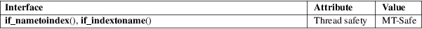

if_nametoindex, if_indextoname − mappings between network interface names and indexes
Standard C library (libc, −lc)
#include <net/if.h>
unsigned int
if_nametoindex(const char *ifname);
char *if_indextoname(unsigned int ifindex, char
*ifname);
The if_nametoindex() function returns the index of the network interface corresponding to the name ifname.
The if_indextoname() function returns the name of the network interface corresponding to the interface index ifindex. The name is placed in the buffer pointed to by ifname. The buffer must allow for the storage of at least IF_NAMESIZE bytes.
On success, if_nametoindex() returns the index number of the network interface; on error, 0 is returned and errno is set to indicate the error.
On success, if_indextoname() returns ifname; on error, NULL is returned and errno is set to indicate the error.
if_nametoindex() may fail and set errno if:
|
ENODEV |
No interface found with given name. |
if_indextoname() may fail and set errno if:
|
ENXIO |
No interface found for the index. |
if_nametoindex() and if_indextoname() may also fail for any of the errors specified for socket(2) or ioctl(2).
For an explanation of the terms used in this section, see attributes(7).

POSIX.1-2008, RFC 3493.
POSIX.1-2001. BSDi.
getifaddrs(3), if_nameindex(3), ifconfig(8)